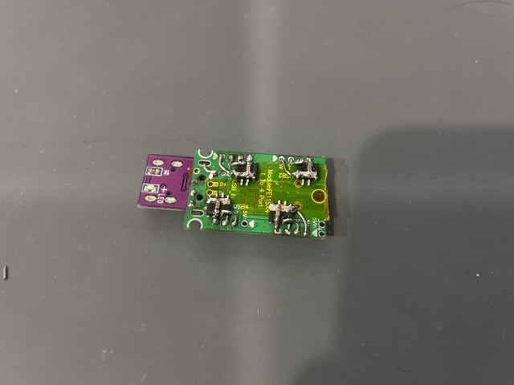
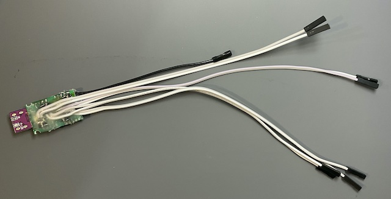
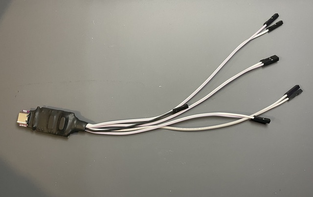

USB to TTLx4ケーブルの作成
ハードウェア
はじめに
USBハブとUSBシリアルコンバータとを組み合わせることで，USB(1ch) to TTL(4ch) の変換ケーブルを作成しました．
やったこと
- type-cコネクタ，USBハブコントローラ基板，USBシリアルコンバータを組み合わせてUSB(1ch) to TTL(4ch)変換ケーブルを作成
回路設計
特別なことは特に何もしていません．CH330のデータシートに従って単純に部品を繋いで行きました．type-cコネクタはVCC端子より5vを取得するため， ccを5.1kΩでプルダウンしています．
今回，EasyEDAを使って回路図を起こしてみたのですが中々使い勝手がよかったです．ブラウザ内で全てが完結するので環境構築が非常に簡単です．私は使用しませんでしたがPCBエディタとの連携機能もあるようです．また，各種ボード(USB1とHUB1)とケーブル(TTL1からTTL4)のピン番号はシステムの都合上割り当てています．そのため，実際にはピン番号はありません．何か良い方法があると良いのですが．

実装
可能な限りケーブルの様に使いたかったので，USBハブコントローラ背面にカプトンテープを貼り，その上にUSBシリアルコンバータを実装しました．

次にケーブルを取り付け全体をグルーガンで固定します．

最後に熱収縮ケーブルで全体をさらに固定して完成です．

動作確認
lsusbコマンドを実行すると以下のデバイスを確認できました．意図した通りに動作しているようです．
Bus 020 Device 018: ID 1a40:0101 TERMINUS TECHNOLOGY INC. USB 2.0 Hub
Bus 020 Device 021: ID 1a86:7523 1a86 USB2.0-Serial
Bus 020 Device 029: ID 1a86:7523 1a86 USB2.0-Serial
Bus 020 Device 024: ID 1a86:7523 1a86 USB2.0-Serial
Bus 020 Device 010: ID 1a86:7523 1a86 USB2.0-Serial後から気が付いたこと
今回はUSBハブとUSBシリアルコンバータとを組み合わせて所望の機能を実現しました．しかしながら，調べてみると同様の機能をワンチップで実現するICがあるようです．次に同様のものを作る時はこちらを使いたいですね．